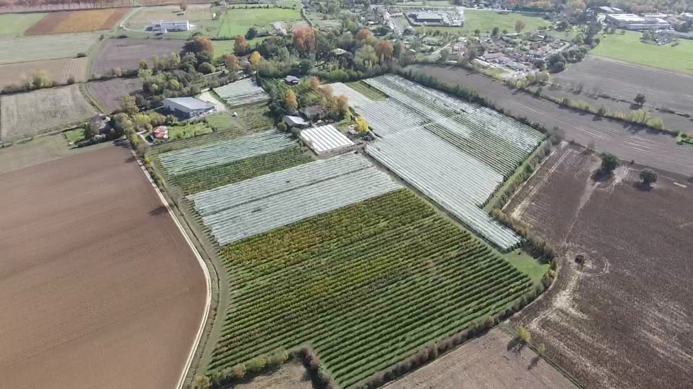

VUE DU CIEL

Une exploitation familiale en circuits courts
Situé dans la basse plaine alluviale du Tarn, le verger cultive 11,17 ha et produit environ 350 tonnes de pommes par an, dont près des trois quarts en agriculture biologique. L'essentiel est vendu en direct : magasin fermier, marchés et cueillette libre.
Découvrir le verger →